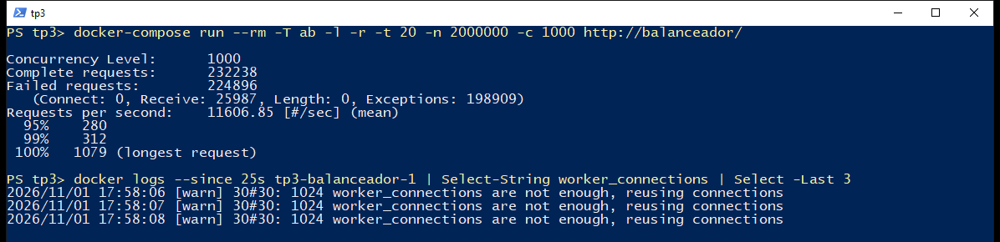

Desplegamos un balanceador NGINX y tres réplicas de un microservicio con un solo archivo de Docker Compose, y lo sometimos a pruebas de carga con Apache Benchmark. Como vara usamos los objetivos del contrato que definimos en el TP2: p95 ≤ 300 ms, p99 ≤ 800 ms y un máximo de 2000 ms.
Con 100 clientes simultáneos el sistema cumple sin problemas (p95 de 79 ms, sin errores). La CPU de las réplicas se satura mucho antes, cerca de los 10 clientes, pero eso solo hace crecer la latencia de forma gradual. El objetivo de p95 se pierde entre 400 y 450 clientes y los errores empiezan cerca de 480, cuando se agota el pool de conexiones de NGINX. A los 1000 clientes falla el 97 % de las peticiones. La lección que más nos dejó el trabajo es que las caídas no vinieron de la CPU, sino de límites de conexiones y de la interacción entre configuraciones.
El archivo docker-compose.yml define todo el entorno y está completo en el Anexo. Un docker-compose up -d levanta exactamente un balanceador y tres réplicas: la cantidad sale de deploy.replicas: 3. Lo probamos borrando antes la imagen de la API, para confirmar que el entorno se construye solo y no requiere pasos previos.
Las decisiones que tomamos en el manifiesto fueron estas:
depends_on: condition: service_healthy, así no recibe tráfico hasta que las réplicas responden.restart: unless-stopped, si el proceso de una réplica termina, Docker la vuelve a levantar.ab no arranca con up -d, así que el entorno tiene solo los cuatro contenedores que pide la consigna.La API está hecha en Node.js con Express sobre node:22-alpine. GET / devuelve el hostname del sistema, que en Docker es el ID corto del contenedor, y GET /health responde al health check.
Agregamos algo que no estaba pedido: GET / ejecuta 3000 iteraciones de PBKDF2, alrededor de 1,6 ms de CPU. Un endpoint que solo devuelve un JSON casi no consume procesador y queríamos saturar la CPU de verdad, que es lo que pide el escenario extremo. Elegimos un cálculo y no una espera porque una espera no ocupa CPU. El valor se cambia con la variable CPU_WORK_ITERATIONS.
La Figura 2 muestra la rotación: nueve peticiones seguidas al balanceador son respondidas por tres IDs distintos, siempre en el mismo orden.
Los resolvimos en dos niveles, porque el health_check activo de NGINX es exclusivo de la versión Plus y usamos la versión abierta:
max_fails=3 fail_timeout=10s. Tres fallos en 10 s sacan a una réplica de la rotación durante 10 s, y proxy_next_upstream reintenta la petición en otra./health en cada réplica y /nginx-health en el balanceador.Hay un límite que conviene tener claro: en Compose, una réplica marcada unhealthy no sale sola de la rotación ni se reinicia. Esa decisión la toma solo el mecanismo pasivo, es decir, recién cuando ya fallaron peticiones reales. Como veremos, esto tuvo consecuencias.
| Prueba | Resultado |
|---|---|
| Detener una réplica durante 10 s con 50 clientes activos | 41.910 peticiones, 0 fallidas; p99 de 110 ms y máximo de 204 ms. Al volver, recibe otra vez su parte del tráfico. |
| Terminar el proceso de una réplica | Docker la reinició sola; a los 13 s estaba otra vez sana. |
Escalar a 5 réplicas con --scale api=5 | NGINX las incorporó sin reiniciarse, gracias a resolve y al DNS interno de Docker. |
Dos aclaraciones. docker stop es una detención ordenada; no probamos un corte abrupto con peticiones en curso. Y NGINX reintenta solo métodos idempotentes como GET: un POST /envios no se reintentaría, y ahí es donde entra en juego la Idempotency-Key que definimos en el TP2.
Respecto a escalar "sin intervención manual", el resultado es parcial. Las réplicas se recuperan solas, pero agregar capacidad sigue requiriendo un comando: Compose no tiene autoescalado. Para eso haría falta un orquestador, como Kubernetes con un HPA.
Cada medición dura 20 s y se repite 3 veces. Informamos el promedio de las tres, salvo la latencia máxima, donde dejamos el peor valor. Corrimos todo en una PC con un i7-9700 de 8 núcleos y 16 GB de RAM, con Docker Desktop sobre WSL2.
ab corre en un contenedor dentro de la red de Compose, para no medir también el reenvío de puertos de Windows. Como comparte la máquina con el sistema probado, controlamos que no fuera el cuello de botella: en el barrido y en las pruebas de escalabilidad, mientras no hubo errores, su CPU se mantuvo entre 6 % y 35 %. Los comandos exactos están en el README y los reportes crudos en resultados/crudo/.
| Métrica | Moderado c = 100 | Extremo c = 1000 config. final | Extremo c = 1000 pool ampliado | Objetivo (TP2) |
|---|---|---|---|---|
| Peticiones con error | 0 % | 97 % | 0 % | – |
| Respuestas correctas por segundo | 1.798 | 321 | 1.781 | – |
| Latencia promedio | 56 ms | * | 552 ms | – |
| Percentil 95 | 79 ms | * | 614 ms | ≤ 300 ms |
| Percentil 99 | 90 ms | * | 635 ms | ≤ 800 ms |
| Latencia máxima | 134 ms | * | 661 ms | ≤ 2000 ms |
| CPU de cada réplica / de NGINX | 88 % / 29 % | 99 % / 49 % | 98 % / 33 % | – |
| Resultado frente al objetivo | Cumple | No cumple | No cumple (solo p95) |
* No se informa porque casi todas las muestras son errores instantáneos: el p50 de esa prueba da 57 ms y no significa que el sistema responda rápido.


Leer estos reportes tiene su trampa. ab cuenta los errores como peticiones completas, así que mientras el sistema se cae, las req/s suben. Además, su "Time per request" no se mide: es la concurrencia dividida por el throughput. Por eso reportamos las respuestas 2xx por segundo y la media de Connection Times.
Dos escenarios no alcanzan para ubicar dónde se degrada el sistema, así que medimos también los puntos intermedios.
| Pool | Clientes | 2xx/s | Errores | Media | p95 | p99 | Máx. | CPU réplica | CPU NGINX | Objetivo |
|---|---|---|---|---|---|---|---|---|---|---|
| 1024 | 1 | 530 | 0 % | 2 | 2 | 3 | 31 | 31 | 14 | Cumple |
| 10 | 1.759 | 0 % | 6 | 11 | 14 | 37 | 97 | 34 | Cumple | |
| 50 | 1.796 | 0 % | 28 | 36 | 44 | 72 | 99 | 32 | Cumple | |
| 100 | 1.798 | 0 % | 56 | 79 | 90 | 134 | 88 | 29 | Cumple | |
| 200 | 1.667 | 0 % | 120 | 175 | 207 | 340 | 99 | 33 | Cumple | |
| 300 | 1.767 | 0 % | 169 | 208 | 225 | 255 | 99 | 33 | Cumple | |
| 400 | 1.729 | 0 % | 230 | 283 | 332 | 454 | 98 | 33 | Cumple | |
| 450 | 1.742 | 0 % | 257 | 319 | 360 | 503 | 99 | 32 | p95 excedido | |
| 480 | 1.699 | 11 % | 250 | 325 | 346 | 380 | 99 | 35 | Con errores | |
| 500 | 441 | 96 % | * | * | * | * | 100 | 57 | Con errores | |
| 1.000 | 321 | 97 % | * | * | * | * | 99 | 49 | Con errores | |
| 2.000 | 38 | 100 % | * | * | * | * | 1 | 29 | Con errores | |
| 8192 | 500 | 1.736 | 0 % | 286 | 335 | 383 | 513 | 98 | 32 | p95 excedido |
| 1.000 | 1.781 | 0 % | 552 | 614 | 635 | 661 | 98 | 33 | p95 excedido | |
| 1.500 | 413 | 95 % | * | * | * | * | 3 | 75 | Con errores | |
| 2.000 | 345 | 97 % | * | * | * | * | 1 | 77 | Con errores |
Latencias en ms y CPU en % de un núcleo. * No representativo: más de la mitad de las respuestas son errores.
Encontramos cuatro puntos de quiebre, cada uno de distinta naturaleza:
| Clientes | Qué pasa | Evidencia |
|---|---|---|
| ≈ 10 | Se saturan las CPU de las réplicas | 97 % de CPU y 1.759 req/s. La latencia sube de 1,9 a 5,7 ms. Sin errores. |
| 400–450 | Se pierde el objetivo de p95 | p95 de 283 ms con 400 clientes y de 319 ms con 450. Sin errores. |
| 450–480 | Se agota el pool de NGINX | 11 % de errores con 480 y 96 % con 500. Log: 1024 worker_connections are not enough. |
| 1000–1500 | Con pool ampliado, se llena el backlog de las réplicas | ListenOverflows pasa de 0 a 250 entre 1000 y 1500 clientes, y aparecen timeouts de conexión. |
Respondiendo a la pregunta de la consigna: lo primero en saturarse fue la CPU de los nodos, pero lo primero en romperse fue NGINX, al quedarse sin conexiones. Son dos cosas distintas. Cuando se satura la CPU, el sistema no falla: las peticiones hacen cola. Por eso, una vez saturado, el caudal se queda en unas 1750 req/s y la latencia crece en proporción a los clientes, como predice la Ley de Little (R = N / X). Con 400 clientes predice 231 ms y medimos 230 ms; con 1000 clientes, 561 ms contra 552 ms.
El pool, en cambio, falla de golpe. Cada petición ocupa dos conexiones, una con el cliente y otra con la réplica, de modo que las 1024 alcanzan para unos 512 clientes como máximo, y los errores empiezan algo antes. Agotado el pool, NGINX corta conexiones y queda en un estado de muy bajo rendimiento: con 2000 clientes salen apenas 38 respuestas correctas por segundo y las réplicas están prácticamente ociosas, con 1 % de CPU. Ampliar el pool a 8192 eliminó los errores a 1000 clientes, lo que confirma la causa.
Pasar de 1000 a 1500 clientes con el pool ampliado expuso el siguiente límite: 1500 clientes son unas 500 conexiones por réplica, cerca del backlog de 511 que Node usa por defecto. Las conexiones tardan más de 1 s, NGINX lo cuenta como fallo y el health check pasivo empieza a retirar réplicas. Este punto es inestable: las tres corridas de 20 s entraron en cascada (413 respuestas correctas por segundo), pero una verificación posterior de 15 s terminó con solo 4 errores.
En nuestra primera configuración habíamos puesto keepalive 64 hacia las réplicas, una recomendación habitual para mejorar el rendimiento. La primera batería mostró algo absurdo: con 200 clientes el sistema "rendía" más de 7000 req/s, cuando su capacidad era de 1800. Al mirar el detalle, más del 90 % de las respuestas eran 502 instantáneos y las réplicas estaban sin carga.
| Clientes | Configuración | 2xx/s | Errores | Máx. |
|---|---|---|---|---|
| 100 | Con keepalive | 1.744 | 5 respuestas 504 | 2.001 ms |
| 150 | Con keepalive | 841 | 79 % | 2.020 ms |
| 200 | Con keepalive | 525 | 90 % | 2.023 ms |
| 200 | Sin keepalive (final) | 1.667 | 0 % | 340 ms |
Algunas peticiones llegaban a esperar más de 2 s y vencían proxy_read_timeout. Esos timeouts cuentan como fallos para max_fails, así que NGINX fue retirando a las tres réplicas, sanas, y se quedó sin destinos (no live upstreams). Cambiando solo esa línea, con 200 clientes pasamos de 90 % de errores a ninguno. Yendo directo a una réplica, sin NGINX, tampoco aparecían esas esperas. No llegamos a aislar el mecanismo exacto; nuestra hipótesis es que Node atiende primero las conexiones reutilizadas y demora las nuevas.
La enseñanza de fondo es que un mecanismo de resiliencia puede volverse la causa de la caída: el health check pasivo no distingue una réplica muerta de una ocupada, y justo cuando el sistema está más cargado le quita capacidad. También tuvo un costo: sin keepalive, NGINX llega al 99 % de CPU con unas 4.890 req/s, mientras que en una única corrida de calibración con keepalive había alcanzado 10.500. Sacarlo resolvió la cascada, pero baja el techo del balanceador.
Casi, pero no del todo. Una réplica con 100 clientes da 649 req/s y p99 de 228 ms. Tres réplicas con el triple de clientes dan 1.767 req/s y p99 de 225 ms: la latencia se mantiene y el caudal se multiplica por 2,72, una eficiencia del 91 %.
| Réplicas | 2xx/s (c = 100 y 200) | Aceleración | Eficiencia | p95 con c = 100 | CPU NGINX con c = 100 |
|---|---|---|---|---|---|
| 1 | 655 | 1,00x | 100 % | 190 ms | 62 % |
| 2 | 1.117 | 1,70x | 85 % | 151 ms | 46 % |
| 3 | 1.732 | 2,64x | 88 % | 79 ms | 29 % |
| 4 | 2.158 | 3,29x | 82 % | 81 ms | 42 % |
| 5 | 2.509 | 3,83x | 77 % | 94 ms | 46 % |
La serie de 2 réplicas fue la más ruidosa (entre 924 y 1302 req/s según la corrida), por lo que su eficiencia es menos confiable. NGINX consume más CPU con una réplica que con tres, aunque atiende menos tráfico; no investigamos el motivo.
La merma no se explica principalmente por el balanceador. Comparando una réplica directa contra la misma réplica detrás de NGINX, con 100 clientes, se pierde un 5,8 % de caudal (689 contra 649 req/s). Además, NGINX no llegó a saturarse en estas pruebas. La eficiencia sigue cayendo al agregar réplicas, hasta 77 % con cinco, y lo atribuimos en parte a que todo comparte una misma máquina, aunque no pudimos aislarlo. A futuro sí habría un límite claro: con unas 500 req/s por réplica, el único worker de NGINX se saturaría cerca de las 10 réplicas.
Tomamos como restricción de tiempo real el máximo de 2000 ms del contrato. Es tiempo real blando: pasarse degrada el servicio, pero no es una falla catastrófica. Con esa vara:
Tampoco hay una garantía estricta, porque nada acota la cola: el máximo depende de cuántos clientes lleguen. Las corridas individuales también varían. En 2 de 7 corridas adicionales con 100 clientes la distribución salió bimodal, con p95 de hasta 176 ms contra los 82 a 99 ms habituales. Sigue dentro del objetivo, pero no identificamos la causa.
Para GlobalLogistics, este despliegue no alcanza tal como está. En el TP2 asumimos picos de 10.000 req/s y medimos unas 1750, con un endpoint que ni siquiera consulta una base de datos. Extrapolando, llegar a esa cifra pediría al menos 20 réplicas y más de dos núcleos de NGINX, y es un piso optimista: la eficiencia venía cayendo y el servicio real haría trabajo de E/S que acá no existe. Además, hay un solo balanceador, que es un punto único de falla: la consigna lo pide así para esta prueba, pero contradice el requisito de alta disponibilidad 24/7.
Generador y sistema comparten máquina, ab no simula tiempos de espera entre peticiones de un usuario (por eso la CPU se satura con tan pocos clientes) y consulta un único endpoint. Los umbrales absolutos valen para este entorno; lo trasladable son el orden de los fallos y sus causas. Para producción proponemos:
La arquitectura cumple lo que pide la consigna: un balanceador y tres réplicas levantadas con IaC, reparto verificable, tolerancia a la caída de una réplica sin peticiones fallidas y escalado horizontal con una eficiencia cercana al 91 % a tres réplicas. Bajo carga moderada cumple holgadamente los objetivos de latencia.
El sistema degrada sus tiempos de respuesta desde que se saturan las CPU, cerca de los 10 clientes, de forma gradual y predecible; pierde el objetivo de p95 entre 400 y 450 clientes y deja de estar disponible cerca de los 480. La latencia máxima cumple la restricción de tiempo real blando de 2000 ms en todo el rango sin errores, aunque sin garantía estricta.
Este comportamiento se explica por la arquitectura desplegada: un proceso de Node por réplica, limitado a un núcleo, fija el caudal; las colas fijan la latencia; y los límites de conexiones y el health check pasivo definen cuándo el sistema pasa de estar lento a estar caído.
El proyecto completo, con el README y los resultados crudos, está en el repositorio.
docker-compose.yml# Levanta exactamente 1 balanceador y 3 réplicas: docker-compose up -d
name: tp3
services:
api:
build: ./api
image: globallogistics/api-envios:1.0
environment:
PORT: "3000"
CPU_WORK_ITERATIONS: "${CPU_WORK_ITERATIONS:-3000}"
expose:
- "3000"
deploy:
replicas: 3
resources:
limits:
cpus: "1.0"
memory: 256M
restart: unless-stopped
healthcheck:
test: ["CMD", "wget", "-q", "--spider", "http://127.0.0.1:3000/health"]
interval: 5s
timeout: 3s
retries: 3
start_period: 5s
balanceador:
image: nginx:1.28-alpine
ports:
- "${LB_PORT:-80}:80"
volumes:
- ./nginx/nginx.conf:/etc/nginx/nginx.conf:ro
depends_on:
api:
condition: service_healthy
deploy:
resources:
limits:
cpus: "1.0"
memory: 128M
restart: unless-stopped
healthcheck:
test: ["CMD", "wget", "-q", "--spider", "http://127.0.0.1/nginx-health"]
interval: 5s
timeout: 3s
retries: 3
# Generador de carga. Por el perfil, "up -d" no lo levanta: se usa con "run".
# Corre dentro de la red de Compose para no medir también el reenvío de puertos de Windows.
ab:
image: httpd:2.4-alpine
profiles: ["loadtest"]
entrypoint: ["ab"]
nginx/nginx.conf# Un solo worker con el pool por defecto de NGINX (1024 conexiones). Cada petición
# ocupa dos: una con el cliente y otra con la réplica, así que el techo real ronda
# los 512 clientes simultáneos. Lo dejamos así para medir la configuración base;
# docker-compose.tuned.yml lo amplía para la comparación.
worker_processes 1;
error_log /dev/stderr warn;
events {
worker_connections 1024;
}
http {
access_log off; # escribir un log por petición falsearía la medición
# DNS interno de Docker. Permite descubrir réplicas nuevas sin reiniciar NGINX.
resolver 127.0.0.11 valid=5s ipv6=off;
upstream api_envios {
zone api_envios 64k;
# "api" es el nombre del servicio en Compose, nunca localhost: dentro de este
# contenedor, localhost es el propio NGINX. El DNS devuelve las tres réplicas.
# Health check pasivo: 3 fallos en 10 s sacan a la réplica de la rotación por 10 s.
# Sin "keepalive" a propósito: con él aparecían esperas de más de 2 s que disparaban
# este mecanismo sobre las tres réplicas a la vez (ver informe y docker-compose.keepalive.yml).
server api:3000 resolve max_fails=3 fail_timeout=10s;
}
server {
listen 80;
# Health check del propio balanceador
location = /nginx-health {
default_type text/plain;
return 200 "ok\n";
}
location / {
proxy_pass http://api_envios;
proxy_http_version 1.1;
proxy_set_header Connection "";
proxy_set_header Host $host;
proxy_set_header X-Forwarded-For $proxy_add_x_forwarded_for;
# Mismo límite que el contrato del TP2: a los 2000 ms se responde 504.
proxy_connect_timeout 1s;
proxy_send_timeout 2s;
proxy_read_timeout 2s;
# Si una réplica se cae, la petición se reintenta en otra y el cliente no se
# entera. No se reintenta por timeout: bajo saturación eso solo agregaría carga.
proxy_next_upstream error http_502 http_503;
proxy_next_upstream_tries 2;
add_header X-Upstream $upstream_addr always;
}
}
}
api/server.jsconst crypto = require('crypto');
const os = require('os');
const express = require('express');
const PORT = Number(process.env.PORT) || 3000;
// Trabajo de CPU por petición. Un endpoint que solo devuelve un JSON no satura nada:
// esto hace las veces de la validación y el cálculo que haría el servicio real.
// Usamos iteraciones fijas (y no "esperar N ms") para que el costo sea CPU de verdad
// y el límite de cpus del contenedor lo afecte. Con 0 se desactiva.
const CPU_WORK_ITERATIONS = Number(process.env.CPU_WORK_ITERATIONS) || 0;
const INSTANCIA = os.hostname(); // en Docker, el hostname es el ID corto del contenedor
const app = express();
app.disable('x-powered-by');
app.get('/', (req, res) => {
if (CPU_WORK_ITERATIONS > 0) {
crypto.pbkdf2Sync('envio', 'globallogistics', CPU_WORK_ITERATIONS, 32, 'sha256');
}
res.json({ servicio: 'api-envios', instancia: INSTANCIA, estado: 'ok' });
});
// Lo consulta el healthcheck de Docker. No hace trabajo de CPU a propósito:
// responde si el proceso está vivo y su event loop no está trabado.
app.get('/health', (req, res) => {
res.json({ estado: 'ok', instancia: INSTANCIA, uptime: Math.round(process.uptime()) });
});
const server = app.listen(PORT, () => {
console.log(`api-envios escuchando en :${PORT} (instancia ${INSTANCIA})`);
});
// Solo importa con la variante docker-compose.keepalive.yml: tiene que superar el keepalive
// de NGINX para que Node no cierre conexiones que NGINX cree abiertas.
server.keepAliveTimeout = 75000;
server.headersTimeout = 76000;
// Apagado ordenado: termina lo que está en curso antes de salir.
process.on('SIGTERM', () => {
server.close(() => process.exit(0));
setTimeout(() => process.exit(0), 5000).unref();
});
api/DockerfileFROM node:22-alpine WORKDIR /app COPY package*.json ./ RUN npm ci --omit=dev COPY server.js ./ USER node ENV NODE_ENV=production EXPOSE 3000 CMD ["node", "server.js"]